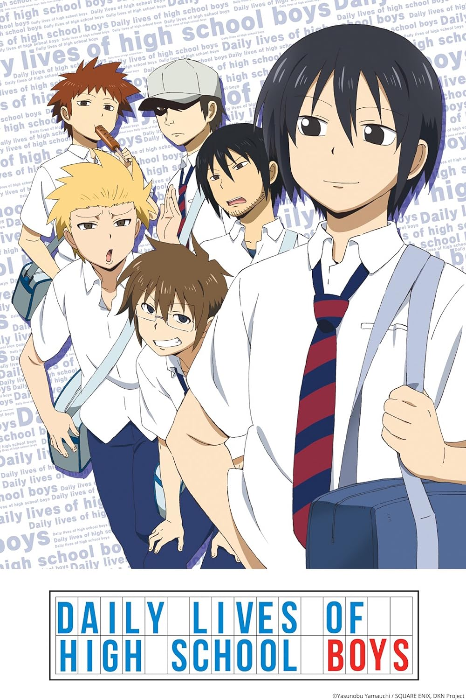
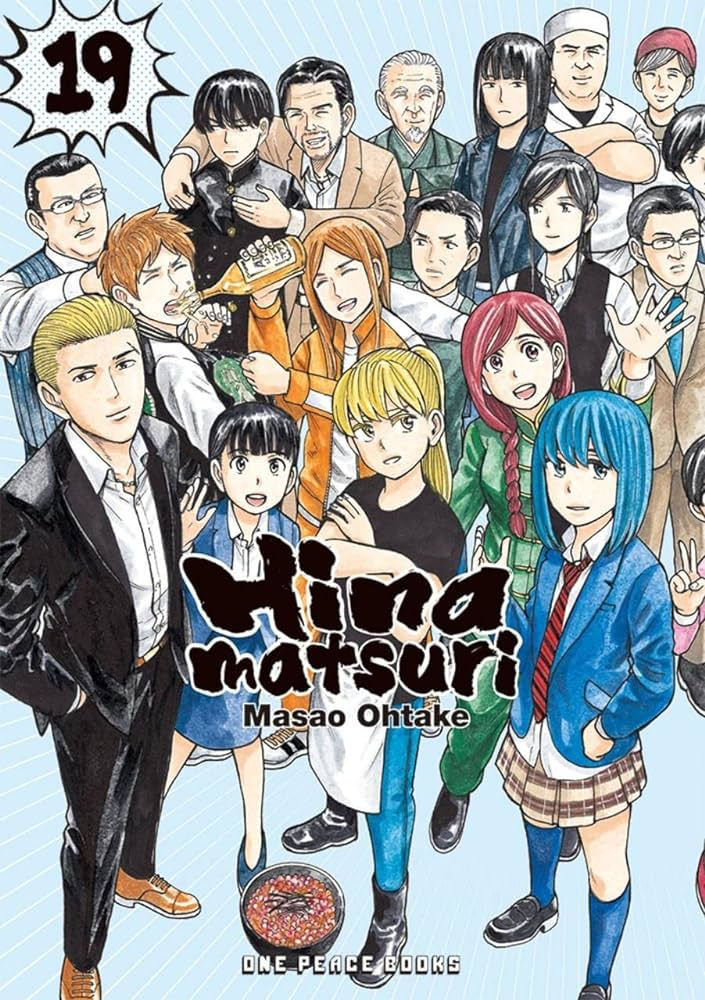
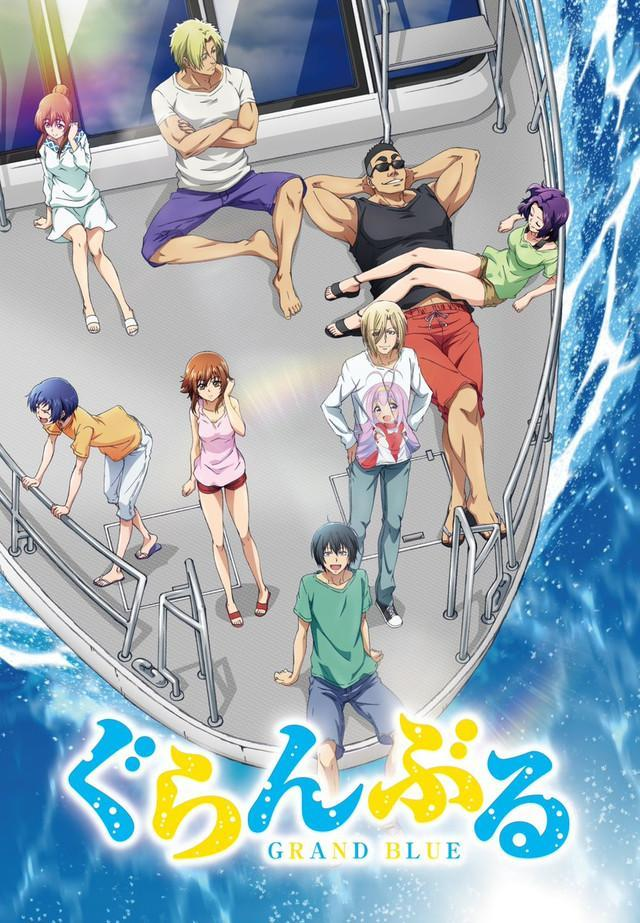
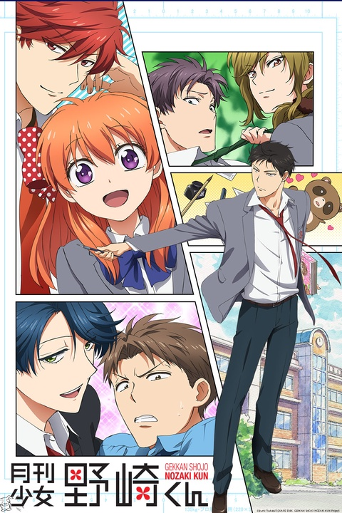

"Toradora!" is a Japanese anime and light novel series that centers
around the unlikely partnership between Ryuuji Takasu, a high school
student with a scary appearance, and Taiga Aisaka, a small but fierce
girl. Despite their contrasting personalities, they decide to help each
other pursue their respective crushes. As they work together, their
relationship evolves, and they discover the complexities of love,
friendship, and self-discovery during their high school years.
"Toradora!" is known for its heartfelt moments, humor, and exploration
of teenage emotions in the realm of romance and friendship.
Daily Lives of High School Boys

"Daily Lives of High School Boys" ("Danshi Koukousei no Nichijou") is a
Japanese manga and anime series that provides a comedic and exaggerated
portrayal of the daily lives and antics of three high school
boys—Tadakuni, Hidenori Tabata, and Yoshitake Tanaka. The series
humorously explores their interactions with each other, their
classmates, and the absurd situations they find themselves in, all
within the backdrop of typical high school life. "Daily Lives of High
School Boys" is known for its witty humor, observational comedy, and
satirical take on various aspects of adolescence, making it a
lighthearted and entertaining slice-of-life series.
No Game No Life
"No Game No Life" is a Japanese anime and light novel series that
follows the siblings Sora and Shiro, who together form the gaming duo
known as "Blank." Transported to a fantasy world governed by games, they
aim to conquer the world by defeating its inhabitants in various
challenges and outsmarting political intrigues. The series is
characterized by its strategic and intellectual approach to gaming,
vibrant visuals, and the siblings' quest for dominance in a world where
everything is determined by games.
Aho Girl
"Aho Girl" is a Japanese anime and manga series that revolves around the
comedic misadventures of Yoshiko Hanabatake, an eccentric and
academically challenged high school girl often referred to as an "idiot"
or "aho" in Japanese. Despite her lack of common sense, Yoshiko's
cheerful and carefree personality affects those around her, particularly
her serious and studious neighbor, Akuru Akutsu. The series humorously
depicts their interactions and the chaotic situations that arise due to
Yoshiko's antics, creating a light-hearted and entertaining comedy
series.
Miss Kobayashi's Dragon Maid
"Miss Kobayashi's Dragon Maid" is a Japanese anime and manga series that
follows Kobayashi, an office worker, who encounters Tohru, a dragon who
transforms into a human maid. Tohru becomes Kobayashi's live-in maid,
and the series explores their daily life together along with other
dragon characters. Filled with humor, fantasy, and themes of friendship,
the series showcases the unconventional relationships between dragons
and humans in a comedic and heartwarming manner.
Hinamatsuri

"Hinamatsuri" is a Japanese anime and manga series that blends elements
of comedy, science fiction, and slice-of-life. The story revolves around
Nitta, a yakuza member whose life takes an unexpected turn when a
mysterious girl with psychic abilities named Hina appears in his
apartment. Hina claims to be an esper sent to observe humanity, and her
presence leads to comedic and heartwarming situations. As Hina and other
characters with supernatural abilities become part of Nitta's life,
"Hinamatsuri" explores themes of friendship, family, and the absurdities
of everyday life. The series is known for its humor, unexpected
character dynamics, and moments of genuine emotion.
Grand Blue

"Grand Blue" is a Japanese manga and anime series that follows the
misadventures of Iori Kitahara as he enters college and joins the diving
club. Expecting a normal college experience, Iori finds himself
entangled in a hilarious world of heavy drinking, partying, and comedic
situations with his eccentric clubmates. The series is known for its
adult humor, absurd antics, and the peculiar but endearing friendships
formed within the diving club. "Grand Blue" offers a comedic take on
college life and the unexpected paths that friendships can take in a
seaside setting.
Spy X Family
"Spy x Family" is a Japanese manga series that blends elements of
action, comedy, and drama. The story revolves around Twilight, a highly
skilled spy, who is given a mission to infiltrate an elite school. To
accomplish this, he needs to create a family, leading him to marry an
esper named Yor Forger. Unbeknownst to them, their adopted daughter,
Anya, possesses telepathic abilities. The series explores the challenges
of maintaining a fake family while juggling espionage missions and
dealing with the complexities of their relationships. "Spy x Family" is
celebrated for its engaging plot, unique characters, and the blend of
spy thriller elements with heartwarming family dynamics.
Gekkan Shoujo Nozaki-kun

"Gekkan Shoujo Nozaki-kun" (Monthly Girls' Nozaki-kun) is a Japanese
anime and manga series that combines romance and comedy. The story
follows Chiyo Sakura, a high school girl who confesses her feelings to
her crush, Umetarou Nozaki, a talented manga artist. However, due to a
misunderstanding, Chiyo becomes one of Nozaki's assistants in creating
his popular shoujo manga. The series humorously explores the dynamics
between Chiyo and Nozaki, as well as the quirky group of individuals
involved in manga creation. Each character represents a different manga
archetype, leading to humorous situations as Chiyo tries to navigate her
feelings for Nozaki amidst the chaotic world of manga production.
"Gekkan Shoujo Nozaki-kun" is known for its clever satire of shoujo
manga tropes, witty humor, and endearing characters. It offers a
lighthearted and entertaining take on the manga creation process while
delivering laughs and heartwarming moments.
Gintama
"Gintama" is a Japanese anime and manga series known for its unique
blend of samurai action, comedy, and parodies. Set in an
alternate-history Edo period invaded by aliens, the story follows
Gintoki Sakata, a lazy yet skilled swordsman, and his oddball friends.
They take on odd jobs, engage in epic battles, and navigate a world
filled with humor, pop culture references, and heartwarming moments.
"Gintama" is acclaimed for its versatility, breaking the fourth wall,
and its ability to seamlessly shift between humor and serious
storytelling, making it a beloved and iconic series.